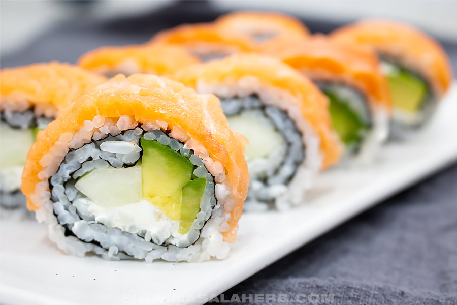

Philadelphia

Philadelphia Roll Sushi
The Philadelphia roll is a sushi roll inspired by traditional Japanese maki sushi.
Rice is on the inside and outside, with the nori sheet (edible algae) in between.
The filling of the Philadelphia roll comes close to the salmon roll but what makes this sushi so special and popular is the addition of cream cheese. Also, the salmon is not on the inside but rather on the outside
The name Philadephia roll was inspired by the most famous cream cheese brand in the world.
This is an amazing dish so let's cook it!
Ingridients:
Cooked Sushi Rice
Nori Seaweed
Cream Cheese
Salmon - raw sashimi grade quality salmon filet OR you can use smoked salmon too if you prefer.
Avocado - not too soft, nor too hard, just right.
Cucumber
Sesame Seeds - I like to use a combination of black and white
Equipment:
Sushi Bamboo Mat
8 inch Chef Knife
Directions:
- Prep and slice avocado, cucumber, and salmon. Keep cooked rice ready.
- Spread most of your sushi rice over your nori sheet. It should stick.
Turn around and use the remaining rice on the other side. Keeping about ½-1 inch or 1-2 cm empty from the top and down border.
- Pour a line of cream cheese over the rice.
Place and arrange cut avocado and cucumber over the cream cheese.
- Roll and press down sushi roll gently with both hands to form a tight maki roll.
- Arrange salmon slices over sushi roll and shape it with a 2nd sushi mat.
- Cut your sushi with a clean knife into slices. Rinse with water in between to cut slices easily.
Serving:
I love my Philadelphia roll slices dipped in a blend of soy sauce and wasabi or with a ponzu sauce.
Pickled Japanese ginger is a must-have, as it cleanses your palate after each bite and it also enhances the whole sushi experience.
You can always serve the sushi with other sushi varieties or with a simple Asian-inspired salad.
Back to menu